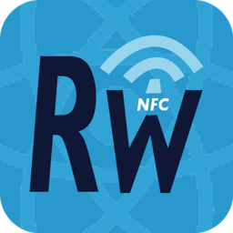
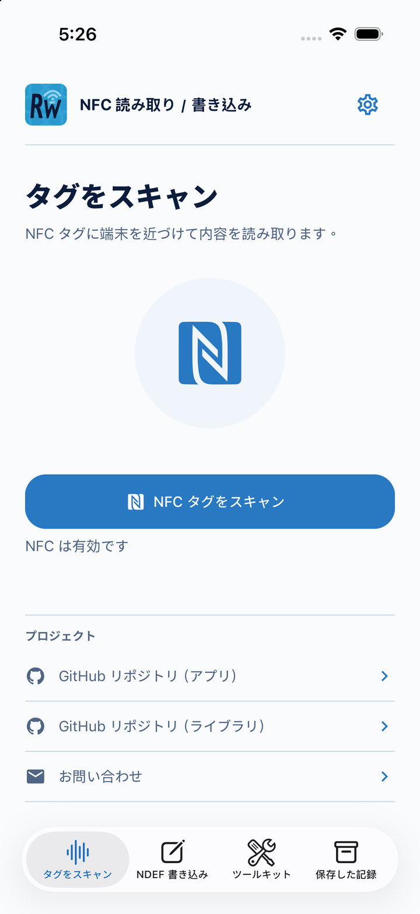
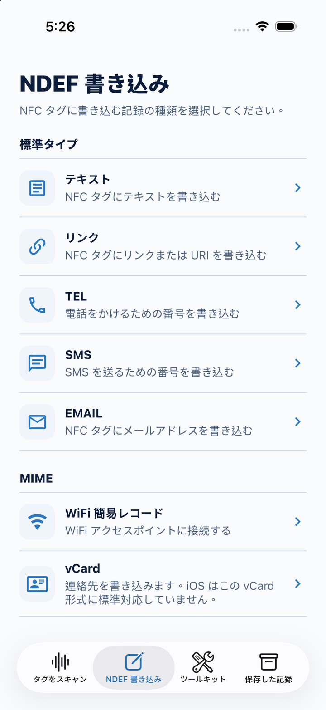
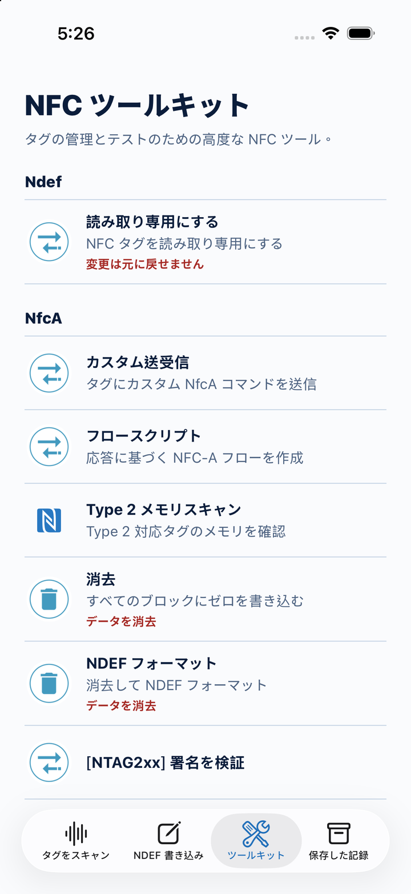
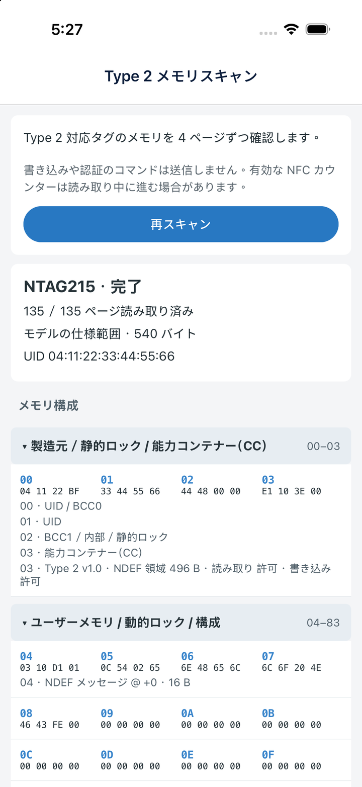

読み、書き、
繰り返し使う。
タグの識別情報、対応技術、NDEF データを確認。テキスト、リンク、電話やメールのショートカット、Wi-Fi、vCard を書き込み、保存したレコードを後で開いたり、コピーや共有もできます。
レコードを開く際の動作は受信側の端末によって異なります。iOS は NFC の vCard レコードを標準機能では開けません。

NFC Open ReWriterオープンソースで、まず試そう。
NFC をもっと知りたい方へ。そして、次の製品をつくる開発者へ。
NFC タグの読み書きからメモリの確認まで。タグの応答を、次のコマンドにつなげましょう。
現在の開発版を紹介しています。ストア版とは異なる場合があります。


タグの可能性を、もう少し先へ。01 / 対応プラットフォーム iOS & Android
02 / 開発フレームワーク React Native
03 / ライセンス MIT ライセンスのオープンソース
04 / アプリの対応言語 English · 繁體中文 · 日本語
最初のタッチから、次のプロトタイプへ。
日常の読み書きから始めて、プロジェクトに必要な機能へ進めます。
タグの識別情報、対応技術、NDEF データを確認。テキスト、リンク、電話やメールのショートカット、Wi-Fi、vCard を書き込み、保存したレコードを後で開いたり、コピーや共有もできます。
レコードを開く際の動作は受信側の端末によって異なります。iOS は NFC の vCard レコードを標準機能では開けません。
応答の取得、変数、条件分岐、待機、回数制限付きの繰り返しを使い、NFC-A または ISO-DEP のフローを作成。送受信したコマンドと分岐の判断を実行トレースで確認できます。
詳しく見る読み取り可能な Type 2 メモリを、バイト列と注釈で確認。NTAG213・215・216 のモデル別レイアウトと、その他の対応タグの範囲を限定したデータ領域スキャンに対応しています。
結果はタグとアクセス条件によって異なります。汎用スキャンは物理メモリ全体のダンプではありません。
持ち歩ける NFC ワークベンチ
コマンドへの応答が、次の処理のヒントになります。応答の一部を取り出して次のコマンドに使ったり、その値で処理を分岐できます。
NFC-A または ISO-DEP でタグと通信します。
応答のバイト列を変数に取り込み、次の処理を選びます。
コマンド、応答、分岐の判断を確認できます。
アプリの中を見てみよう
開発版の 6 つの画面。
画像を選ぶと、拡大して確認できます。
タグの情報と NDEF レコードを読み取ります。
目的に合ったレコード形式を選びます。

コマンド、フロー、メモリのツールへ。
タグの応答に応じた NFC フローを作成します。
送ったコマンドと返ってきた応答を確認します。

ページのデータを解説とともに確認できます。
スクリーンショットは、選択した言語のアプリ画面です。iOS シミュレータでタグのデモデータを使用しており、新たな実機テストの結果を示すものではありません。ストア版とは異なる場合があります。
ソースから、自由に。
このワークベンチは、開発の出発点にもなります。React Native のソースを読み、自分の用途に合わせて改修したり、アプリへの NFC 組み込みを試せます。
MIT ライセンス。NFC ライブラリ： react-native-nfc-manager。
ソースを見るつくりたいものはありますか？
NFC のプロトタイプ、React Native への組み込み、モバイルアプリの受託開発についてご相談ください。
メール： nfctogo@gmail.com。対象プラットフォーム、タグやハードウェア、実現したいことをお知らせください。
NFC 対応の iPhone または Android 端末と、対応タグが必要です。利用できる技術や操作は、端末、OS、タグによって異なります。
NTAG213・215・216 と識別したタグは、モデルごとのページ範囲を読み取ります。その他の対応 Type 2 タグは、Capability Container（CC）が示すデータ領域に範囲を限定します。読めないページは利用不可と表示し、不完全な結果から原因を推測しません。識別と読み取りコマンドのみを送信しますが、タグ側の読み取りカウンターが進む場合があります。
このページは現在のソースと開発版を紹介しています。フロースクリプト、Type 2 メモリスキャン、3 言語の画面などは、ストア版と異なる場合があります。ストアのリリース情報を確認するか、対応するソースからビルドしてください。